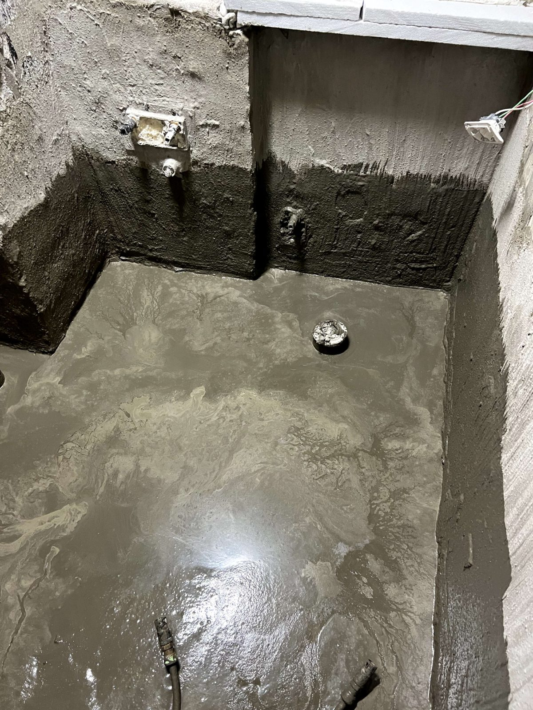
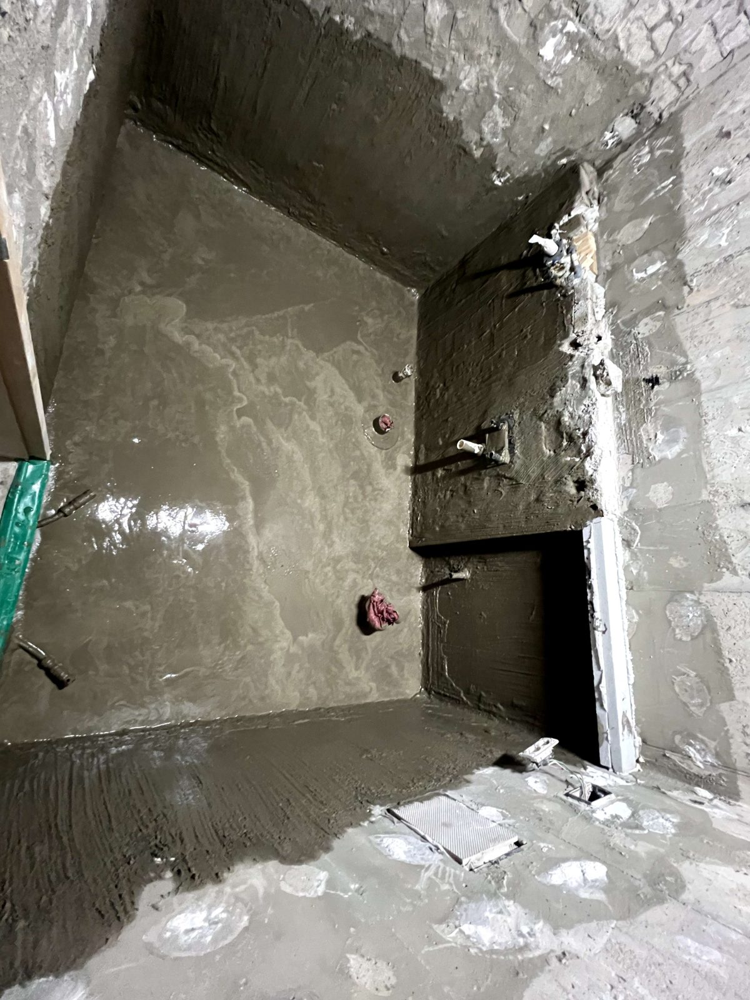
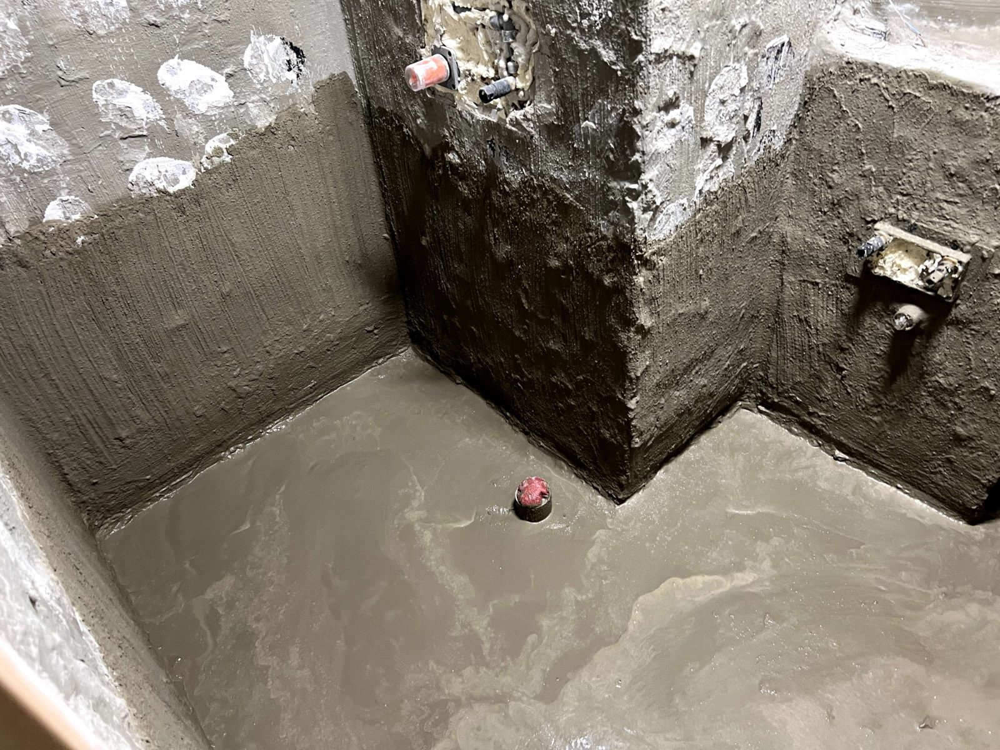

세종 가온마을 욕실 젠다이·매립수전 시공과 1·2차 방수

매립수전을 고정하고 젠다이를 조적으로 만든 뒤 그 위에 1·2차 방수를 올린 현장입니다. 타일 뒤에 가려지는 뼈대 공정을 기록으로 남깁니다.
어떤 공사였나요
욕실의 겉 타일이 아니라 그 아래 뼈대를 만든 현장입니다. 벽 속에 들어가는 매립수전을 고정하고, 젠다이(욕실 선반턱)를 조적으로 쌓은 뒤, 그 위에 방수를 1·2차로 올렸습니다.
매립수전은 시공 때가 전부입니다
매립수전은 배관이 벽 안으로 들어가기 때문에, 시공 시점에 몸체 고정과 배관 연결부 확인을 확실히 해두지 않으면 나중에 벽을 다시 뜯어야 합니다. 수전 몸체를 견고하게 고정하고 연결부를 확인한 뒤 다음 공정으로 넘어갔습니다.

젠다이와 방수
젠다이와 벽이 만나는 모서리는 욕실에서 물이 가장 잘 스미는 자리입니다. 1차 방수를 젠다이·벽·바닥에 일체로 도포하고, 건조 후 2차 방수를 올려 모서리를 보강했습니다. 타일이 올라가면 보이지 않게 되지만 욕실 수명은 이 단계에서 결정됩니다.

견적 비교할 때 확인할 것
욕실 공사 견적을 비교하실 때는 방수를 몇 차까지 하는지 물어보시길 권합니다. 보이지 않는 공정이라 생략되는 경우가 있는데, 재발 누수의 흔한 원인입니다.